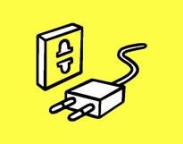
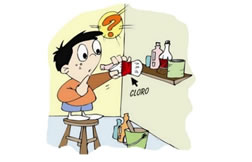
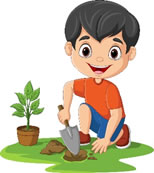

¿Cómo Cuidar el Medio Ambiente?
Para conseguir que el ambiente empiece a recuperarse de todos los daños que ha vivido a lo largo del tiempo y de la contaminación por las actividades humanas; es importante cumplir con ciertas medidas y en todos los aspectos; ya que haciéndolo al pie de la letra el tiempo de vida se duplicará; manteniendo la calidad del ambiente disponible para todos los seres vivos.
Ahorrar energía eléctrica
Para ahorrar energía en el hogar, las condiciones fundamentales son reemplazar los filtros del aire acondicionado; por lo menos una vez mensual ya que al acumularse los residuos, se incrementa la contaminación de forma global.
Ajusta la temperatura del refrigerador a una media de 33 o 38°F y el congelador de 0 a 5°C y elige aquellos tipos de electrodomésticos con ahorro de energía; al igual que las bombillas fluorescentes que tienen esta propiedad.
Es importante bajar el termostato perteneciente al calentador de agua a una medida de 120. Cuando salgas, apaga todas las luces de los dormitorios; pues el calentamiento global, empieza con el exceso de energía innecesaria.
Disminuye la toxicidad en casa
Reducir en gran medida los componentes tóxicos que generalmente se encuentran en casa, es una de las mejores formas de aportar un grano de arena al cuidado del medio ambiente; sobre todo si viven muchas personas en la vivienda.
Empieza por eliminar por completo el mercurio que tengas en casa; esto lo puedes hacer simplemente evitando comprar aquellos productos que lo contengan dentro de su estructura o conformación.
Igualmente prefiere aquellos productos de limpieza que no tengan grandes cantidades de químicos que resultan peligrosos para el medio ambiente; pues a la larga las consecuencias serán visibles y se estaría contribuyendo al deterioro del entorno natural.
Plantar arboles
No olvides plantar árboles, para evitar la deforestación, pues la meta cada día se hace más alta ya que son los que proveen de oxígeno todo el entorno natural; lo que significa una máxima proporción de vida para todos los seres vivos.
Mientras más árboles existan en todos los ambientes, más aire puro y más vida abarcará a los seres del planeta todos los días.
Recuerda que cuidar y darle toda la preservación al medio ambiente es tarea de todos y a pesar que muy pocas sean las personas comprometidas con este hecho, la enseñanza es la base para proceder a cumplir los objetivos que también requieren de tiempo y esfuerzo, pero que al final deja resultados muy conmovedores a quienes quieren al planeta verde, un planeta saludable.
| Temas |
|---|